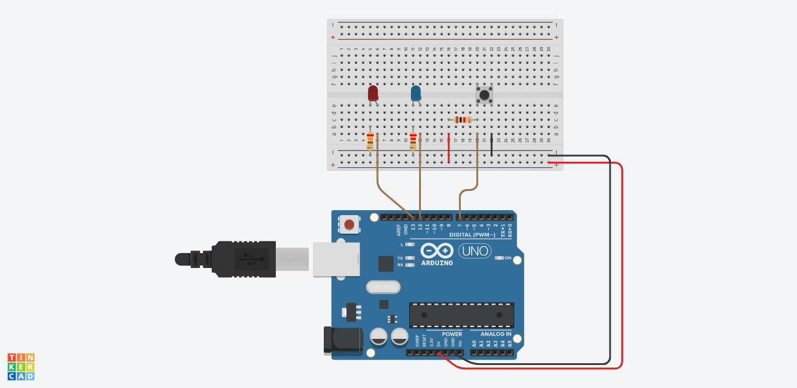

LED Pattern Circuit
Create a account on tinkercad to start on creating our own circuit :
Tinkercad:

Components needed to do an LED blicker circuit:
- Resistors
- LED
- push button
- Bread Board
- Arduino UNO board
Pattern to implement:
- LED 1 and LED2 will be OFF
- LED 1 will ON and LED2 will OFF
- LED 1 will OFF and LED2 will ON
- LED 1 will ON and LED2 will ON
- LED 1 will OFF and LED2 will OFF
Completed Circuit:
How it works:
The arduino uno board is program to follow requested pattern flow .It enables the user to control the LED light up according to the programmed board to follow the pattern
Virtual demo: